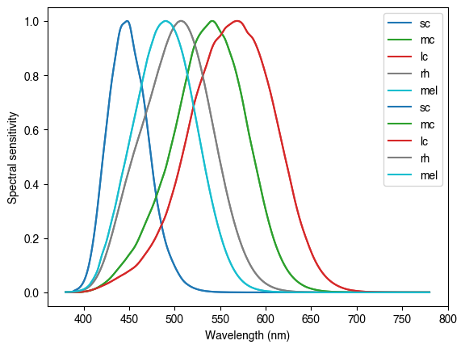

[6]:
import pandas as pd
import matplotlib.pyplot as plt
from pysilsub import observers
obs32_2 = pd.read_csv("~/Desktop/linss2_10e_1.csv", header=None)
obs32_2.columns = ['Wavelength', 'sc', 'lc', 'mc']
obs32_2 = obs32_2.set_index('Wavelength')
#obs32_2.plot(color=['blue', 'green', 'red'])
obs = observers.IndividualColorimetricObserver(32, 10)
obs2 = observers.StandardColorimetricObserver()
obs.plot_action_spectra()
obs2.plot_action_spectra()
[6]:
<AxesSubplot: xlabel='Wavelength (nm)', ylabel='Spectral sensitivity'>

[31]:
obs.action_spectra
[31]:
| sc | mc | lc | rh | mel | |
|---|---|---|---|---|---|
| Wavelength | |||||
| 380 | 0.0 | 0.000000 | 0.000000 | 5.890000e-04 | 9.181600e-04 |
| 381 | 0.0 | 0.000000 | 0.000000 | 6.650000e-04 | 1.045600e-03 |
| 382 | 0.0 | 0.000000 | 0.000000 | 7.520000e-04 | 1.178600e-03 |
| 383 | 0.0 | 0.000000 | 0.000000 | 8.540000e-04 | 1.322800e-03 |
| 384 | 0.0 | 0.000000 | 0.000000 | 9.720000e-04 | 1.483800e-03 |
| ... | ... | ... | ... | ... | ... |
| 776 | 0.0 | 0.000002 | 0.000027 | 1.730000e-07 | 2.550000e-08 |
| 777 | 0.0 | 0.000002 | 0.000025 | 1.640000e-07 | 2.420000e-08 |
| 778 | 0.0 | 0.000002 | 0.000024 | 1.550000e-07 | 2.290000e-08 |
| 779 | 0.0 | 0.000002 | 0.000022 | 1.470000e-07 | 2.170000e-08 |
| 780 | 0.0 | 0.000002 | 0.000021 | 1.390000e-07 | 2.050000e-08 |
401 rows × 5 columns
[ ]:
standard = observers.StandardColorimetricObserver()
ax = standard.plot_action_spectra(lw=1, figsize=(8,4))
individual = observers.IndividualColorimetricObserver(age=22, field_size=10)
individual.plot_action_spectra(legend=False, ls=':', lw=1)
individual = observers.IndividualColorimetricObserver(age=42, field_size=10)
individual.plot_action_spectra(legend=False, ls=':', lw=1)
twinax = ax.twinx()
twinax.plot([], ls='-', c='k', label='Standard observer (age=32, field_size=10)')
twinax.plot([], ls=':', c='k', label='Individual observer (age=32, field_size=10)')
twinax.set_yticks([])
twinax.legend(loc='lower right');
[6]:
obs
[6]:
| 0 | 1 | 2 | 3 | |
|---|---|---|---|---|
| 0 | 390 | 4.150030e-04 | 3.683490e-04 | 0.009547 |
| 1 | 391 | 5.026500e-04 | 4.480150e-04 | 0.011479 |
| 2 | 392 | 6.073670e-04 | 5.439650e-04 | 0.013799 |
| 3 | 393 | 7.318500e-04 | 6.589830e-04 | 0.016575 |
| 4 | 394 | 8.790120e-04 | 7.961210e-04 | 0.019887 |
| ... | ... | ... | ... | ... |
| 436 | 826 | 1.228440e-06 | 1.187810e-07 | NaN |
| 437 | 827 | 1.158880e-06 | 1.124160e-07 | NaN |
| 438 | 828 | 1.093480e-06 | 1.063980e-07 | NaN |
| 439 | 829 | 1.032030e-06 | 1.007110e-07 | NaN |
| 440 | 830 | 9.743060e-07 | 9.534110e-08 | NaN |
441 rows × 4 columns
[ ]: